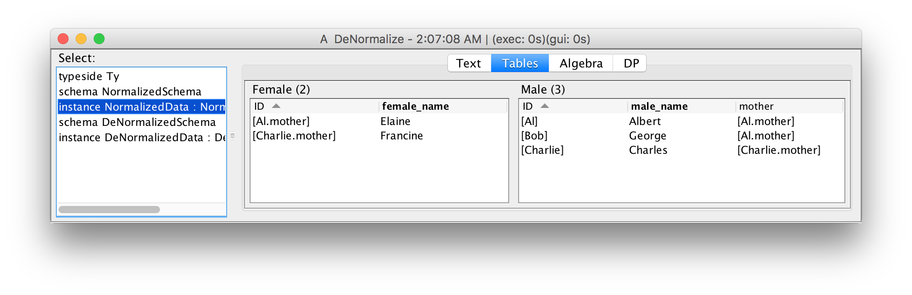
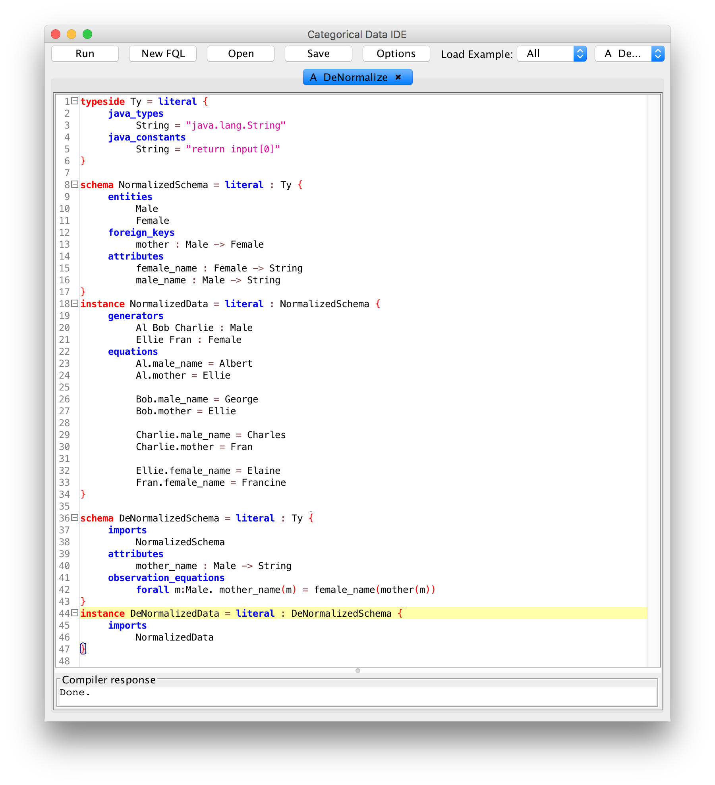

Categorical Databases
Home |
Download |
Getting Started |
Manual |
Wiki |
Papers |
Screen Shots |
Github |
Google Group |
Conexus |
Contact
Transparent Denormalization
Many data integration tasks require denormalizing a schema (adding redundant attributes) to increase query performance. The different copies of a piece of data must then be kept in sync, an error-prone task. In CQL, equational constraints can transparently enforce that the redundant copies of a piece of data are all the same.
In the CQL example below (built-in to the IDE with name Denormalize), the normalized schema contains information about males and their mothers. The denormalized schema contains an additional redundant attribute, the name of each male's mother, as well as an equation specifying how the redundant attribute is derived. When the normalized data is loaded into the denormalized schema, the value of the redundant attribute is automatically computed. The equation linking the redundant data to the master data will be respected by every CQL operation on the denormalized schema, ensuring that the redundant attribute can never become out of sync.
We begin by specifying a normalized source schema containing males and females, a foreign key indicating the mother of each male, and a string attribute for the name of each male and female:
typeside Ty = literal {
java_types
String = "java.lang.String"
java_constants
String = "return input[0]"
}
schema NormalizedSchema = literal : Ty {
entities
Male
Female
foreign_keys
mother : Male -> Female
attributes
female_name : Female -> String
male_name : Male -> String
}
Here is some sample data and its view in the IDE:
instance NormalizedData = literal : NormalizedSchema {
generators
Al Bob Charlie : Male
Ellie Fran : Female
equations
Al.male_name = Albert
Al.mother = Ellie
Bob.male_name = George
Bob.mother = Ellie
Charlie.male_name = Charles
Charlie.mother = Fran
Ellie.female_name = Elaine
Fran.female_name = Francine
}

Next, we specify the denormalized schema by importing the normalized schema, adding an attribute for each male's mother's name, and an equation stating that the attribute must equal each male's mother's name:
schema DeNormalizedSchema = literal : Ty {
imports
NormalizedSchema
attributes
mother_name : Male -> String
observation_equations
forall m:Male. mother_name(m) = female_name(mother(m))
}
Finally, we import the normalized data onto the denormalized schema and view it in the IDE:
instance DeNormalizedData = literal : DeNormalizedSchema {
imports
NormalizedData
}
A screen shot of the entire development is shown below:
